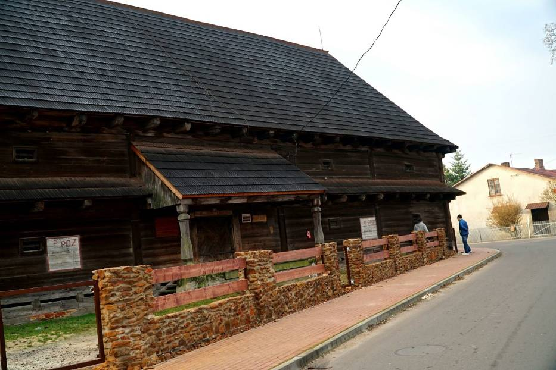
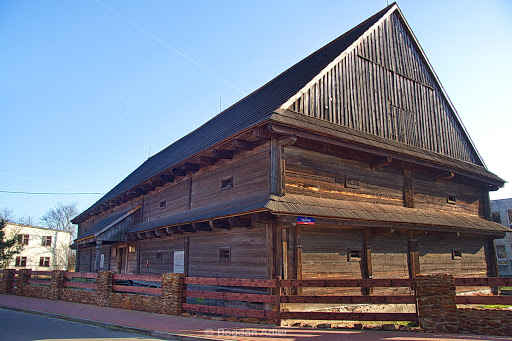
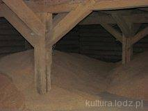

Drewniany, o zrębowej konstrukcji spichlerz podworski z XVIII w. jest unikalnym zabytkiem w skali kraju. Posiada trzy kondygnacje wyodrębnione na zewnątrz niewielkimi daszkami. Dwuspadowy dach pokryty jest drewnianym gontem.
Opis
Drewniany spichlerz podworski zbudowany został z modrzewiowych bali drewnianych w 1777 r. na planie wydłużonego prostokąta jako trójkondygnacyjna budowla o konstrukcji zrębowej. Dwie kondygnacje przedzielone są daszkiem, a całość pokryta gontowym dachem dwuspadowym. Budowla posiada okap wsparty na wystających belkach stropowych wokół całego budynku. Od frontu znajdują się drzwi wejściowe obite metalowymi ćwiekami w celu zabezpieczenia przed włamaniem. W każdej z elewacji znajdują się małe okienka, przez które wentylowane są pomieszczenia, posiadają one ozdobne okucia pośrodku.

Historia
Osiemnastowieczny, modrzewiowy spichlerz posadowiony na podmurówce został wybudowany przez właściciela Skomlina Władysława Bartochowskiego. Na trzech kondygnacjach spichlerz może pomieścić 300 ton zboża. Posiada charakterystyczne niskie drzwi wejściowe nabijane żelaznymi ćwiekami, które miały utrudnić włamanie, powodując tępienie siekier w przypadku próby wyrąbania dziury.
Ciekawostki
W Polsce prawdopodobnie istnieją tylko dwa dobrze zachowane osiemnastowieczne spichlerze. Jeden z nich znajduje się w Kazimierzu Dolnym nad Wisłą, drugi zaś w Skomlinie. 
Materiał Budowlany
Bale drewniane, modrzewiowe. Podmurówka z kamienia.
Data lub czas powstania
1777 r. (XVIII w.)

Położenie obiektu
Obiekt położony w północno-wschodniej części miejscowości nieopodal budynku szkoły, znajduje się około 200 m od przystanku autobusowego. Dojazd drogą relacji: Wichernik – Skomlin.
Dostępność
Obiekt można oglądać z zewnątrz przez cały rok.
Źródło: http://www.kultura.lodz.pl/pl/poi/59